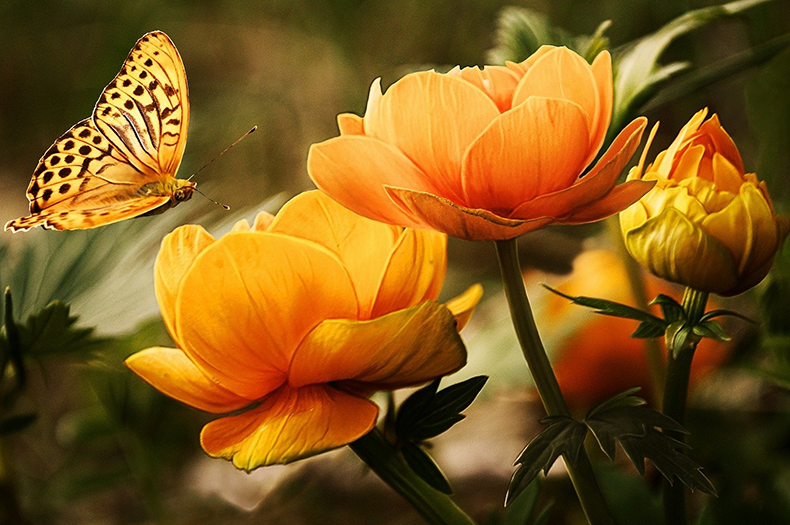

Lab 1 - Part A
Brief Instructions:
Opening, Changing Size, Cropping and Saving
The idea in this project was to learn to open, resize, crop, and save pictures. In this way a modified picture was created to the desired look. Here, I created a close up of the butterflies and flowers.
I chose to do it this way because I wanted to be able to crop pictures the way I wanted.
Last worked on date: 09/12/2021

Last worked on date: 09/12/2021